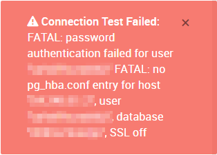

I would like to use a Postgres database hosted on Heroku as a datasource, but as stated in the Heroku documentation:
Heroku Postgres & SSL
Heroku Postgres databases created on the Common Runtime requires the use of SSL. Most clients will connect over SSL by default, but on occasion it is necessary to set the sslmode=require parameter on a Postgres connection.
Unfortunately, the re:dash postgres datasource does not provide any way to set this parameter. So I get an error when trying to connect to this database - and the error states that “SSL is off”.
How could I “force” this parameter sslmode to require?
As there is probably more people interested in creating dashboard using Heroku Postgres datasource, it would be great to have this setting in the datasource creation page.
There are multiple users who use Redash & Heroku’s Postgres database. Can you include the full error message and some details on your setup (how did you install Redash, what version, etc)?
I installed re:dash on Heroku, following the steps described in the doc. The installation went smoothly.
Then I configured a new postgresql datasource:
Type: PostgreSQL
Database / port / user / password: the settings of the database which contains the data I’d like to analyze.
When trying to connect, I get the exact same error message I get when using any postgresql client without sslmode=require:

I know this message seems related to a missing entry in pg_hba.conf, but it also states “SSL off”, which is the actual cause of the error. On other postgresql clients, I was able to solve this by forcing sslmode=require in the connection settings. And the Heroku documentation explains the same.
{kind=link}